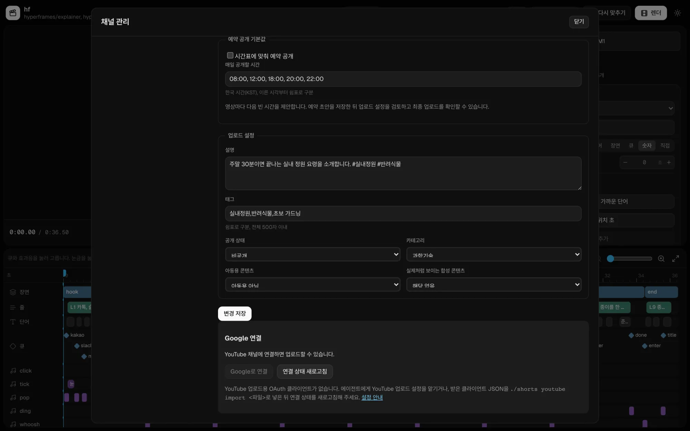
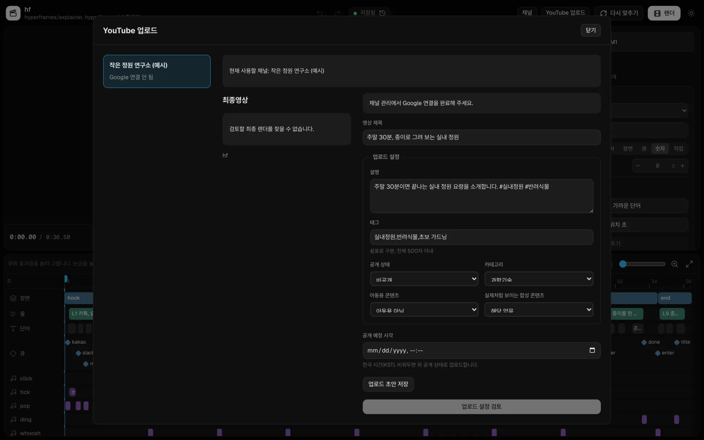

How uploads work
This page explains how fishcut connects to YouTube, TikTok and Instagram and uploads videos, how it reads the metrics of videos you posted, what data it stores, and how to revoke access. It is gathered on one page for platform reviewers and for users connecting for the first time.
1. Architecture
The fishcut editor is a desktop app that runs on your computer. The screen and the command line (CLI) share one daemon that runs at this computer's address (127.0.0.1). The editor sends Google account connection and YouTube upload requests directly to Google. The diagram below shows the YouTube connection. There is no server in between for YouTube connection and upload, so the operator does not receive YouTube tokens, channel information, or videos. Connecting TikTok and Instagram is described in section 7.
2. From connecting to uploading
-
Add an OAuth client
OAuth client credentials cannot be included in an open source repository. In your own Google Cloud project, turn on YouTube Data API v3 and create an OAuth client for a desktop app, then add the downloaded JSON file by running
fishcut youtube import <file>. You can also leave this to your agent. -
Connect with Google
First, a person reviews the fishcut Privacy Policy, fishcut Terms of Service and YouTube Terms of Service in channel management, selects the initially unchecked checkbox, and presses the separate acceptance button. The accepted revision and time are stored in this computer's publishing state. An existing Google connection does not imply acceptance, and an already connected channel does not need to reconnect. An agent cannot accept on your behalf.
Then press "Google로 연결" (Connect with Google), and the Google consent screen opens in your system's default browser. fishcut does not use a browser built into the app. When you check the app name and the permissions listed in section 3 on the consent screen and allow them, the editor receives the result at a temporary address on this computer (PKCE, state check). This Google authorization is separate from accepting the editor's policy.

This channel-management example predates the policy-acceptance screen. The current version also requires the separate acceptance described above. Until you add an OAuth client, "Google로 연결" (Connect with Google) is turned off. -
Check the channel
Once you are connected, the editor uses
youtube.readonlyto read the name and ID of the connected channel and shows them. On this screen, check that it is the channel you want to upload to. -
Review the upload settings
Set the title, description, tags, visibility (public, unlisted, private), category, made for kids, realistic synthetic content, and scheduled time. Your channel defaults are filled in first, but you can change them for each video, and the editor does not add any other text after what you enter.
The server checks acceptance of its current policy revision again before preparing a review and sending an upload. It does not send without the required acceptance. Editing and saving drafts are separate from policy acceptance, as are disconnecting and retrying revocation. Operations that use credentials still stop if protected data or its key cannot be read.

YouTube upload settings. If you leave the scheduled time empty, the video is uploaded right away with the visibility you chose. -
A person checks and uploads
The review screen shows the final video, the channel, and the settings again. For both ordinary and scheduled uploads, the final button is accompanied by the notice about complying with the YouTube Terms of Service and Community Guidelines and respecting copyright and privacy rights. The upload with
youtube.uploadstarts only when a person presses "확인했고, YouTube에 업로드" (Checked, upload to YouTube). The agent cannot press this button. -
Check the status after upload
After a scheduled upload, the editor uses
youtube.readonlyto read the video's visibility status and scheduled time again and compares them with your request. For an unscheduled upload, it records the upload response as the result.
3. Permissions fishcut requests
| Permission | Used for | Not used for |
|---|---|---|
youtube.upload | Uploading the final video a person has checked to the connected channel, with the settings that person chose | Uploads that a person has not checked, changes to videos on other channels |
youtube.readonly | Showing the name and ID of the channel to upload to, checking visibility status and scheduled time after a scheduled upload | Collecting watch history or subscriptions |
yt-analytics.readonly | Showing the metrics of the connected channel itself (views, average watch time, audience retention, impressions) on the Metrics screen | Collecting data from other channels, advertising, sale |
When fishcut uses information it receives from Google APIs, or transfers that information to another app, it follows the Google API Services User Data Policy, including the Limited Use requirements.
fishcut's use and transfer to any other app of information received from Google APIs will adhere to the Google API Services User Data Policy, including the Limited Use requirements.
4. Data fishcut stores
Google, TikTok and Instagram tokens and app secrets are stored in the macOS Keychain and are not kept in files in the state folder. The state folder and its files are created with permissions that let only the user who runs fishcut read and write them (0700, 0600). Channel information, upload records, metrics, authored content, projects and OAuth client files are stored as files in the state folder and work folder and are not separately encrypted.
| Data | Used for | Retention and deletion |
|---|---|---|
| Google refresh token | Authenticating YouTube requests | Maintenance deletes it after 30 days without a successful connection check. After a failed revocation request, it is disabled for connection use and kept only for retries; maintenance deletes it after 7 days from withdrawal. |
| ID and name of the connected channel | Showing the channel to upload to | Checked periodically while running; maintenance deletes it after 30 days without successful verification. Withdrawal disables the connection. |
| Upload records, session URL and duplicate-upload fingerprint | Checking results and preventing duplicate uploads | Maintenance deletes these together after 30 days from creation. Requesting withdrawal in the editor deletes related records locally within 7 days. |
| Upload settings (title, description, tags, visibility, and more) | Reusing what you entered for the next upload | Kept until you change or delete them. |
| OAuth client file | Connecting to Google | Kept until you change or delete it. |
| TikTok and Instagram tokens | Authenticating upload and metric-reading requests | Deleted from the Keychain right away when you disconnect. |
| TikTok and Instagram publishing records and metrics | The Metrics screen | Kept until you delete them while connected. When you disconnect, they are kept separately for 30 days only, then deleted. |
| Policy-acceptance revision and time | Checking human acceptance | Kept in local publishing state. Accepting a different revision updates the acceptance record. |
5. Revoking access and deleting data
- Disconnecting in channel management first disables the connection and asks Google to revoke the token. Failures are shown as pending and retried while the editor is running. Deleting local records is not the same as successful Google revocation.
- You can also revoke access on the Google Account permissions page. While running, the editor checks periodically and deletes the connection and related API records when Google explicitly reports an invalid token.
- Deleting the state folder removes only the local data in that folder and does not send Google a revocation request. Keys in the OS credential store, separate project files, backups and videos already uploaded to YouTube are not affected.
6. Upload limit
The YouTube Data API videos.insert upload allowance applies to the Google Cloud project you use. Check that project's quota screen for its actual limit. Submitting fishcut's increase request does not mean approval or allocation, and this page does not guarantee a daily upload count.
7. Connecting TikTok and Instagram, and metrics
You can also connect TikTok and Instagram accounts besides YouTube. These connections are optional. The full description of how information is handled is in section 3 of the Privacy Policy; this section describes only the flow.
-
Connect an account
When you press connect for TikTok or Instagram in channel management, the service's consent screen opens in your default browser, and the account owner allows the permissions personally. fishcut does not press login or consent for you. The login result returns to a one-time address on this computer (
127.0.0.1). The code exchange, and the refreshing and revoking of TikTok tokens, which need an app secret, are done by the auth relay (auth.fishcut.aidenahn.com) that the operator runs, and that server does not store tokens. Tokens are stored only in the macOS Keychain on this computer. -
Review and upload
On the review screen you check the video, the target account and who can see it, and a person must approve before the video is sent. The video goes from this computer directly to the service. For TikTok, fishcut by default sends a draft to your inbox, and you set the caption and who can see it in the TikTok app before you post. Only if you turned on direct posting separately when you connected does it post to your profile with the visibility you chose.
-
Read metrics
The Metrics screen shows how the videos you posted performed. While fishcut is running it reads every 6 hours, and right away when you press the sync button. For TikTok it reads the profile metrics of the connected account itself (follower count, following count, total likes, video count) and video metrics (views, likes, comments, shares) through the TikTok API. When the account owner has authorized access through the TikTok API for Business (Accounts API), it also reads video insights such as average watch time, completion rate and traffic sources. It stores what it reads only on this computer and uses it only to show it to the account owner on the Metrics screen. It is not used for sale, sharing with third parties, combining across users, creator discovery, ranking or advertising.
-
Disconnect and revoke access
Disconnecting in channel management deletes the tokens from the Keychain and stops reading metrics. For TikTok it also asks TikTok to revoke the token. That account's publishing records and metrics are kept separately on this computer for 30 days only, then deleted. To end access on TikTok itself, remove fishcut in TikTok settings, or in the TikTok app under Settings, Security, Manage app permissions. For Instagram, remove the app in Facebook's Business Integrations settings.